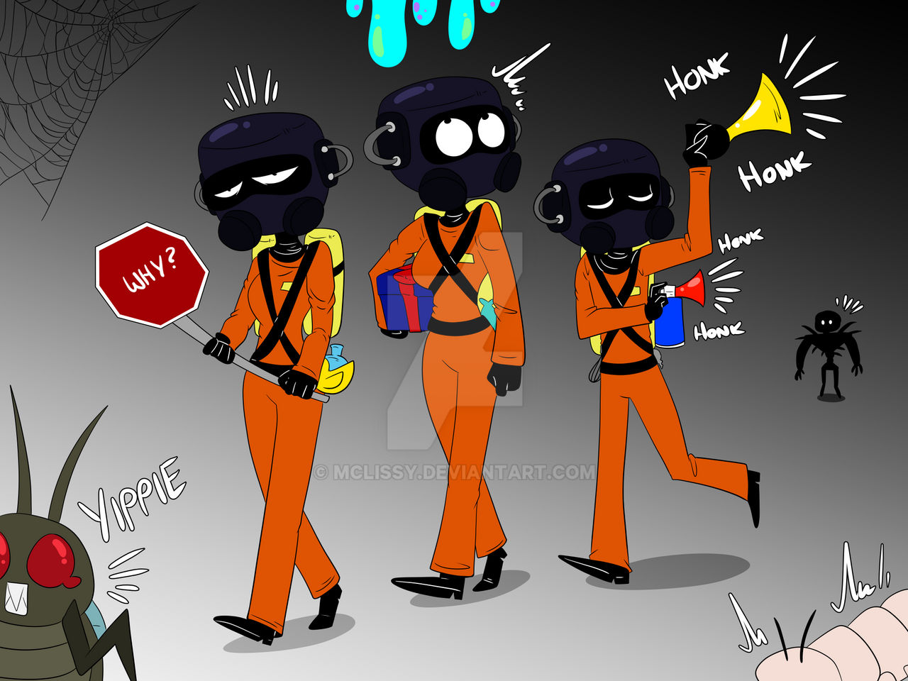
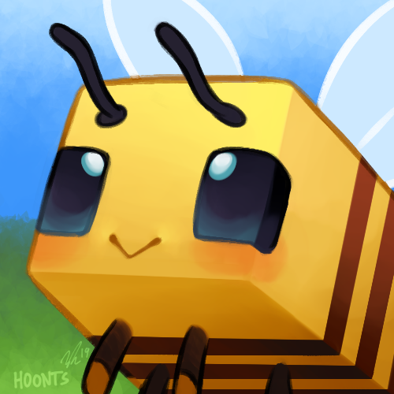
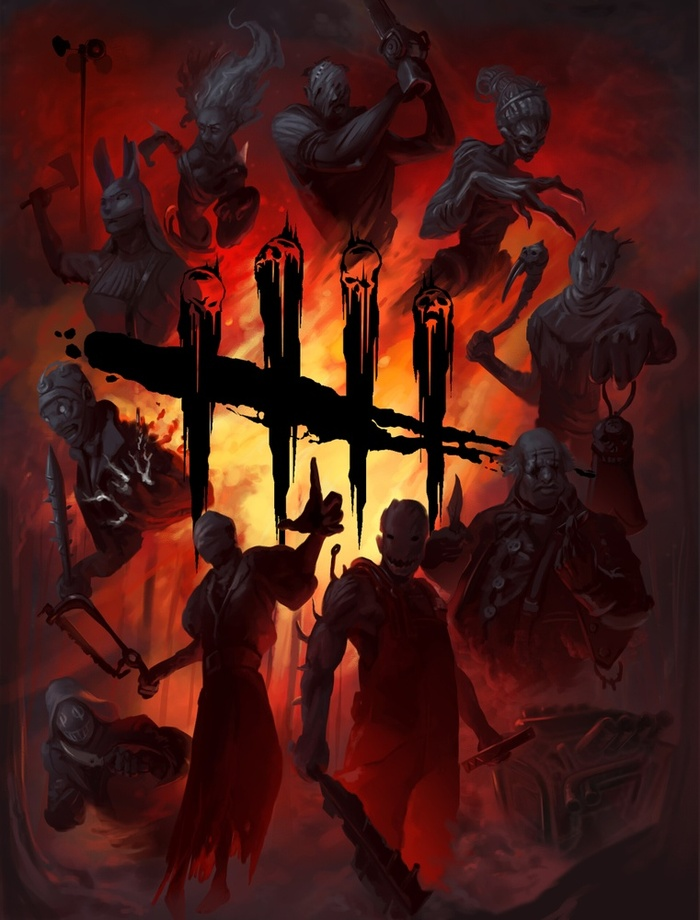
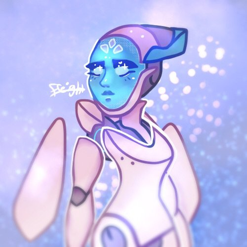

Jump into the immersive world of gaming with me! We ride for those who aren't the best of gamers when it comes to skill but we still here having fun.
Join the
Community




Lethal Company
Minecraft
Dead by Daylight
Overwatch
Rogue's community is so fun that I often spend 18+ hours worshipping Rogue's genuis with their 2M other fans. My wife always begs me to get off and help her with our 4 young children, but I just tell her to 'get lost' and that my real love, Rogue, is gonna come and rescue me any day now, even though I know they're a lesbian.